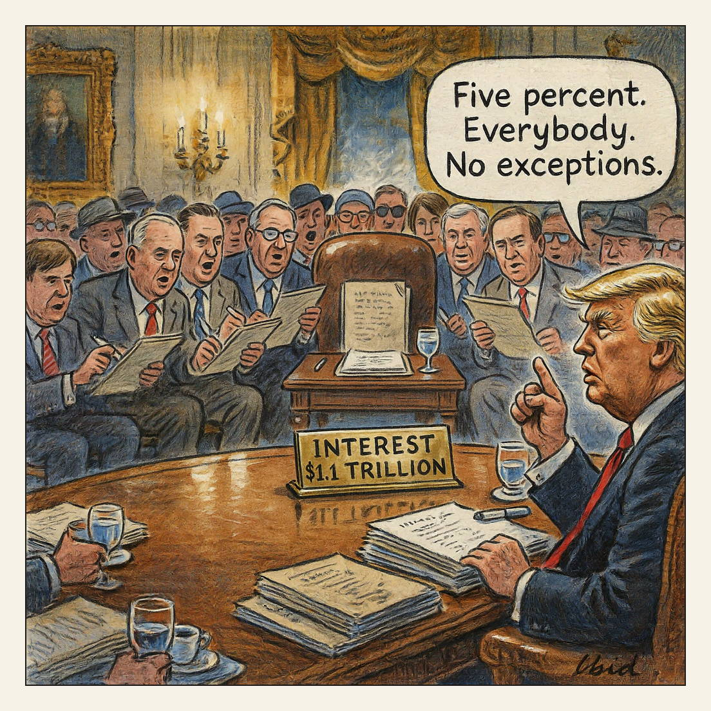

Paid in full, in absentia.
Regrets Only

The U.S. federal debt topped $40 trillion on Wednesday, the Treasury Department reported, five months after it passed $39 trillion. Spending exceeds revenue by more than $2 trillion a year, and interest payments now cost over $1 trillion annually, the government's second-largest expense behind Social Security. The Supreme Court struck down many of President Trump's tariffs, forcing Treasury to refund more than $100 billion, while the 30-year Treasury yield hit a 19-year high.